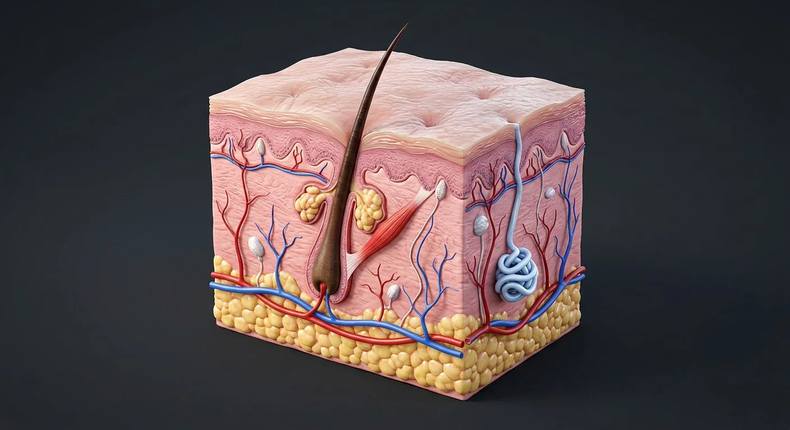

ORGAN → UNDER THE LENS
Epidermal and dermal layers
Tap to compare the organ region with a tissue-level teaching illustration.
Read about Stratum basale & spinosum ↓A layered barrier with hair, glands, receptors and its own immune system.

Hair shaft & follicleStratum corneumStratum basale & spinosumSebaceous glandDermis (papillary & reticular)Meissner corpuscleArrector pili musclePacinian corpuscleDermal vessels & AV anastomosesHypodermis (subcutis)Eccrine sweat gland & ductThe epidermis is a keratinising stratified squamous epithelium renewed from the basal layer every ~4 weeks, with melanocytes, Langerhans cells and Merkel cells among the keratinocytes. Beneath it the dermis gives strength and elasticity (papillary loose, reticular dense connective tissue) and carries the vessels, nerves, hair follicles and glands. The hypodermis is fat that insulates and cushions. Skin makes vitamin D, senses the world, and regulates temperature by sweating and by shunting blood through arteriovenous anastomoses.
These are educational cutaways, not literal magnifications of an organ pixel or laboratory slides. A ring marks the approximate tissue region; part-specific lines appear only where identifiable.
Tap to compare the organ region with a tissue-level teaching illustration.
Read about Stratum basale & spinosum ↓These 11 structures describe anatomy related to the chapter’s regional illustration. Each entry separates location, function and a clinical point.
15–20 layers of dead, flattened, keratin-filled corneocytes held by lipids — the "brick and mortar" barrier.
What it doesWaterproofing and the main barrier to microbes and chemicals.
Clinical connectionIts thickness defines palms and soles; loss in burns allows catastrophic fluid and heat loss.
The single basal row of dividing keratinocytes on the basement membrane, plus the prickle-cell layers above with desmosomes, melanocytes and Langerhans cells.
What it doesRenews the epidermis; melanocytes transfer pigment; Langerhans cells present antigen.
Clinical connectionBasal cell carcinoma arises here at sun-exposed sites; melanoma from melanocytes.
Papillary layer of loose connective tissue forming dermal papillae; reticular layer of dense irregular collagen and elastin.
What it doesStrength, elasticity, sensation and the vascular supply of the epidermis.
Clinical connectionSplit-thickness grafts take from the dermal remnants left in the wound bed; keloids are dermal over-scarring.
Loose connective tissue and fat, with larger vessels and nerves and, in places, panniculus carnosus.
What it doesInsulation, energy store, shock absorption and skin mobility.
Clinical connectionSubcutaneous insulin absorption varies with site and temperature because of this layer's blood flow.
A keratinised shaft growing from a follicle that dips into dermis or fat, with a bulb around a dermal papilla and a bulge of stem cells.
What it doesProtection, sensation and (in other mammals) insulation.
Clinical connectionFollicular stem cells re-epithelialise partial-thickness wounds; follicles are the target of alopecias.
A band of smooth muscle from follicle to dermis, supplied by sympathetic fibres.
What it doesErects the hair (goose flesh) and helps express sebum.
Clinical connectionIts contraction in cold traps air for insulation — vestigial in humans.
A holocrine gland of lipid-filled cells opening into the follicle above the arrector pili insertion.
What it doesSebum lubricates and waterproofs hair and skin and has mild antimicrobial action.
Clinical connectionBlocked, colonised glands are the lesion of acne vulgaris (Propionibacterium/Cutibacterium acnes).
A coiled secretory coil deep in the dermis with a duct spiralling through the epidermis to a pore.
What it doesEvaporative cooling — the main human thermoregulatory mechanism; also excretes salt, urea and lactate.
Clinical connectionHeat stroke follows when sweating fails; cystic fibrosis makes sweat abnormally salty (chloride test).
A stacked, encapsulated ending in the dermal papillae of glabrous skin.
What it doesDetects light touch and low-frequency vibration (rapidly adapting).
Clinical connectionDense in fingertips and lips — the reason two-point discrimination is finest there.
An onion-like encapsulated receptor in deep dermis and hypodermis.
What it doesSenses deep pressure and high-frequency vibration.
Clinical connectionIts loss in leprosy and diabetes contributes to unnoticed injury and ulceration.
A deep and a superficial plexus with capillary loops in each dermal papilla, plus glomus arteriovenous shunts in acral skin.
What it doesNutrition of the epidermis and control of heat loss by shunting blood.
Clinical connectionOpening the shunts flushes and cools; closing them in cold makes fingers pale — exaggerated in Raynaud phenomenon.
These 9 additional entries give anatomical context. They are deliberately not assigned a photographic pin on the regional image.
Related deep chapters: Skin layers & appendages.
Deep single proliferative keratinocyte layer adjoining basement membrane.
What it doesRenews overlying epidermis.
Clinical connectionBasal-cell carcinoma derives from basal-type cells.
Several layers of keratinocytes strongly joined by desmosomes.
What it doesProvides mechanical cohesion.
Clinical connectionDesmosomal disruption causes epidermal blistering.
Flattened keratinocytes with keratohyalin granules and lipid-releasing lamellar bodies.
What it doesBuilds the water-permeability barrier.
Clinical connectionBarrier injury increases transepidermal water loss.
Thin translucent transition zone most apparent in glabrous palms and soles.
What it doesAdds specialized layer in thick skin.
Clinical connectionDo not expect a distinct lucidum in ordinary thin hairy skin.
Anchoring complex joining epidermis to dermis with hemidesmosomes and matrix.
What it doesResists separation and supports renewal.
Clinical connectionPlane of separation distinguishes blister disorders.
Fingerlike papillary dermal projections interlocking with epidermal ridges.
What it doesIncrease attachment surface and house capillary loops.
Clinical connectionRete ridge pattern varies by body site.
Superficial loose connective tissue with capillaries and fine collagen.
What it doesNourishes avascular epidermis by diffusion.
Clinical connectionSuperficial wounds may preserve deep appendages.
Deeper dense irregular collagen-and-elastin connective tissue.
What it doesProvides tensile strength and elasticity.
Clinical connectionFull-thickness injury through reticular dermis commonly scars.
Adipose lobules and connective septa deep to the dermis.
What it doesInsulation, cushioning and movable attachment.
Clinical connectionNot one of the histologic dermal layers.
Short answers grounded in the structures described above. Use the illustrated guide for anatomical context.
The epidermis is the outer epithelial barrier; the vascular dermis contains connective tissue, vessels and nerves. Subcutaneous tissue lies beneath the skin and varies by region.
The keratinized epidermal surface limits water loss and helps block external injury and microbes, while deeper tissue supports sensation, repair and temperature regulation.
15–20 layers of dead, flattened, keratin-filled corneocytes held by lipids — the "brick and mortar" barrier. Function: Waterproofing and the main barrier to microbes and chemicals.
Papillary layer of loose connective tissue forming dermal papillae; reticular layer of dense irregular collagen and elastin. Function: Strength, elasticity, sensation and the vascular supply of the epidermis.
Function: Protection, sensation and (in other mammals) insulation. A keratinised shaft growing from a follicle that dips into dermis or fat, with a bulb around a dermal papilla and a bulge of stem cells.
Follow these connected structures and body systems in the illustrated atlas.
 Skin layers & appendagesThe five thick-skin epidermal strata, two dermal zones, hypodermis, receptors and follicle–gland units.↗
Skin layers & appendagesThe five thick-skin epidermal strata, two dermal zones, hypodermis, receptors and follicle–gland units.↗ BrainMidsagittal section: cerebrum, diencephalon, brainstem and cerebellum around the ventricular system.↗
BrainMidsagittal section: cerebrum, diencephalon, brainstem and cerebellum around the ventricular system.↗ HeartA four-chambered muscular pump with four valves and its own electrical conduction system.↗
HeartA four-chambered muscular pump with four valves and its own electrical conduction system.↗ KidneyCoronal section plus a nephron: filtration, reabsorption, secretion and urine concentration.↗
KidneyCoronal section plus a nephron: filtration, reabsorption, secretion and urine concentration.↗General anatomy references and related source chapters for continued study. These links do not make the digital illustrations clinical images or certify every anatomical variant.
This educational page is not medical advice and has not undergone formal clinical peer review. Spotted an error? Contact the editor.
Open the realistic interactive plate, label lines, focus view and self-test.